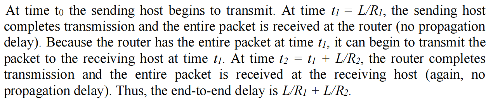
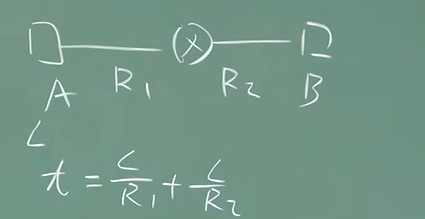
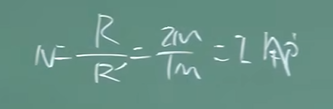
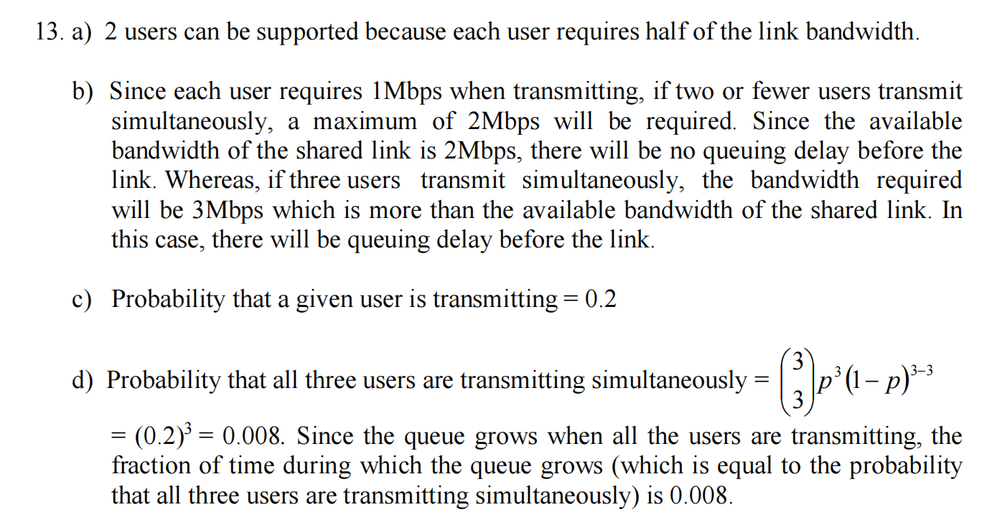
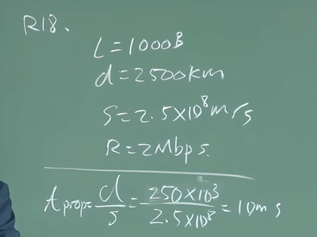
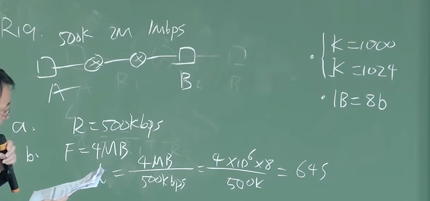
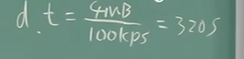
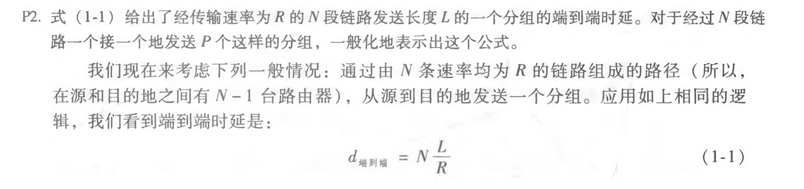

ch1¶
Homework Problems and Questions¶
SECTION 1.1¶
R1. What is the difference between a host and an end system? List several different types of end systems. Is a Web server an end system?
There is no difference between a host and end system.
Different types of end system: smart phone, PCs, Web servers, mail servers, Interneted-connected game consoles.
The web server is an end system.
R9. HFC, DSL, and FTTH are all used for residential access. For each of these access technologies, provide a range of transmission rates and comment on whether the transmission rate is shared or dedicated.
Dial up modems: up to 56 Kbps, bandwidth is dedicated;
DSL: up to 24 Mbps downstream and 2.5 Mbps upstream, bandwidth is dedicated;
HFC, rates up to 42.8
Mbps and upstream rates of up to 30.7 Mbps, bandwidth is shared.
FTTH: 2-10Mbps upload; 10-20 Mbps download; bandwidth is not shared.
SECTION 1.3¶
R11. Suppose there is exactly one packet switch between a sending host and a receiving host. The transmission rates between the sending host and the switch and between the switch and the receiving host are R1 and R2, respectively. Assuming that the switch uses store-and-forward packet switching, what is the total end-to-end delay to send a packet of length L? (Ignore queuing, propagation delay, and processing delay.)

因为交换机使用存储-转发分组交换，所以整个分组必须先完全存储在交换机的缓存中，然后才能进行转发。因此，总的端到端延迟等于传输延迟。

R12. What advantage does a circuit-switched network have over a packet-switched network? What advantages does TDM have over FDM in a circuit-switched network?
a circuit-switched network: guarantee a centain amount of end-to-end bandwith for the duration of a call. while most packet-switched network cannot make any end-to-end guarantees for bandwith.
TDM is advantageous over FDM in a circuit-switched network due to its efficient use of bandwidth, simple implementation, lower crosstalk, ease of upgrade, and better suitability for digital signals.
FDM requires sophisticated analog hardware to shift signal into appropriate frequency bands.
R13. Suppose users share a 2 Mbps link. Also suppose each user transmits continuously at 1 Mbps when transmitting, but each user transmits only 20 percent of the time. (See the discussion of statistical multiplexing in Section 1.3.)
a. When circuit switching is used, how many users can be supported?
When circuit switching is used, each user requires a dedicated 1 Mbps link. Therefore, only two users can be supported on the 2 Mbps link.

b. For the remainder of this problem, suppose packet switching is used. Why will there be essentially no queuing delay before the link if two or fewer users transmit at the same time? Why will there be a queuing delay if three users transmit at the same time?
最高不超过2，没有排队情况，支持2个用户ok
c. Find the probability that a given user is transmitting.
Let p be the probability that a given user is transmitting. Since each user transmits only 20 percent of the time, we have p = 0.2.
d. Suppose now there are three users. Find the probability that at any given time, all three users are transmitting simultaneously. Find the fraction of time during which the queue grows.

R14. Why will two ISPs at the same level of the hierarchy often peer with each other? How does an IXP earn money?
If the two ISPs do not peer with each other, then when they send traffic to each other they have to send the traffic through a provider ISP (intermediary), to which they have to pay for carrying the traffic. By peering with each other directly, the two ISPs can reduce their payments to their provider ISPs. An Internet Exchange Points (IXP) (typically in a standalone building with its own switches) is a meeting point where multiple ISPs can connect and/or peer together. An ISP earns its money by charging each of the the ISPs that connect to the IXP a relatively small fee, which may depend on the amount of traffic sent to or received from the IXP.
R15. Some content providers have created their own networks. Describe Google’s network. What motivates content providers to create these networks?
Google Global Network is a private fiber optic network connecting Google's data centers globally, providing fast and reliable service. Content providers create their own networks for control, optimization, and reliability, save money
Google has created its own network, known as Google Global Network, which is a private fiber optic network that spans across the globe, connecting its data centers and providing high-speed internet access to its users. Content providers like Google create these networks to ensure reliable and fast delivery of their services, reduce reliance on third-party networks, and have more control over their network infrastructure. This also allows them to optimize their network for their specific needs, such as reducing latency and improving security
SECTION 1.4¶
R16. Consider sending a packet from a source host to a destination host over a fixed route. List the delay components in the end-to-end delay. Which of these delays are constant and which are variable?
processing delays, transmission delays, propagation delays, and queuing delays.
All of these delays are fixed, except for the queuing delays, which are variable.
R17. Visit the Transmission Versus Propagation Delay interactive animation at the companion Web site. Among the rates, propagation delay, and packet sizes available, find a combination for which the sender finishes transmitting before the first bit of the packet reaches the receiver. Find another combination for which the first bit of the packet reaches the receiver before the sender finishes transmitting.
a) 1000 km, 1 Mbps, 100 bytes
b) 100 km, 1 Mbps, 100 bytes
- [ ] R18. How long does it take a packet of length 1,000 bytes to propagate over a link of distance 2,500 km, propagation speed 2.510^8 m/s, and transmission rate 2 Mbps? More generally, how long does it take a packet of length L to propagate over a link of distance d, propagation speed s, and transmission rate R* bps? Does this delay depend on packet length? Does this delay depend on transmission rate?
d/s
no
no
传播延迟只和距离和光速有关系

R19. Suppose Host A wants to send a large file to Host B. The path from Host A to Host B has three links, of rates R1 = 500 kbps, R2 = 2 Mbps, and R3 = 1 Mbps.
a. Assuming no other traffic in the network, what is the throughput for the file transfer?
R1=0.5Mbps
the throughput for the file transfer: min{R1, R2, R3}=500kbps
b. Suppose the file is 4 million bytes. Dividing the file size by the through put, roughly how long will it take to transfer the file to Host B?
We can calculate the time it takes to transfer the file using the formula:
Time = File size / Throughput
First, we need to convert the file size from bytes to bits:
4 million bytes = 4,000,000 * 8 = 32,000,000 bits
Next, we need to find the bottleneck link, which is the link with the lowest bandwidth. In this case, it is the first link with a bandwidth of 500 kbps.
So the time it takes to transfer the file is:
Time = 32,000,000 bits / 500,000 bits/s + (32,000,000 bits / 2,000,000 bits/s) + (32,000,000 bits / 1,000,000 bits/s) Time = 64 seconds
Therefore, it will take roughly 64 seconds to transfer the file from Host A to Host B.

- [ ] c. Repeat (a) and (b), but now with R2 reduced to 100 kbps.
the throughput for the file transfer: min{R1, R2, R3}=100kbps
We can calculate the time it takes to transfer the file using the formula:
Time = File size / Throughput
First, we need to convert the file size from bytes to bits:
4 million bytes = 4,000,000 * 8 = 32,000,000 bits
Next, we need to find the bottleneck link, which is the link with the lowest bandwidth. In this case, it is the first link with a bandwidth of 100 kbps.
So the time it takes to transfer the file is:
Time = 32,000,000 bits / 500,000 bits/s + (32,000,000 bits /100,000 bits/s) + (32,000,000 bits / 1,000,000 bits/s) Time = 320 seconds
Therefore, it will take roughly 64 seconds to transfer the file from Host A to Host B.

R20. Suppose end system A wants to send a large file to end system B. At a very high level, describe how end system A creates packets from the file. When one of these packets arrives to a router, what information in the packet does the router use to determine the link onto which the packet is forwarded? Why is packet switching in the Internet analogous to driving from one city to another and asking directions along the way?
End system A breaks the large file into chunks. It adds header to each chunk, thereby generating multiple packets from the file. The header in each packet includes the IP address of the destination (end system B). The packet switch uses the destination IP address in the packet to determine the outgoing link. Asking which road to take is analogous to a packet asking which outgoing link it should be forwarded on, given the packet’s destination address.
R21. Visit the Queuing and Loss interactive animation at the companion Web site. What is the maximum emission rate and the minimum transmission rate? With those rates, what is the traffic intensity? Run the interactive animation with these rates and determine how long it takes for packet loss to occur. Then repeat the experiment a second time and determine again how long it takes for packet loss to occur. Are the values different? Why or why not?
The maximum emission rate is 500 packets/sec and the maximum transmission rate is 350 packets/sec. The corresponding traffic intensity is 500/350 =1.43 > 1. Loss will eventually occur for each experiment; but the time when loss first occurs will be different from one experiment to the next due to the randomness in the emission process.
SECTION 1.5¶
R22. List five tasks that a layer can perform. Is it possible that one (or more) of these tasks could be performed by two (or more) layers?
5 tasks: error control, flow control, segmentation and reassembly, multiplexing, connect setup.
Yes. They can be duplicated at different layers.
eg, error control is ofter provided at more than one layer.
R23. What are the five layers in the Internet protocol stack? What are the principal responsibilities of each of these layers?
from top to bottom
- application layer: support network applications. eg, FTP, SMTP, HTTP
- transport layer: process-process data transfer. eg. TCP, UDP
- network layer: routing of datagrams from source to destination. eg IP
- link layer: data transfer from neighboring network elements. eg,PPP
- physical layer: bits on the wire.
R24. What is an application-layer message? A transport-layer segment? A network-layer datagram? A link-layer frame?
- application layer, message: data which application wants to send and pass on to transport layer
- transport layer, segment: genereated by the transport layer and encapsulates application-layer message with transport layer header.
- network layer, datagram: encapsulate transport-layer segment with a network-layer header
- link layer, frame: encapsulate network layer datagram with a link-layer header.
R25. Which layers in the Internet protocol stack does a router process? Which layers does a link-layer switch process? Which layers does a host process?
router process network, link and physis layer.
link-layer switch process link layer and physis layer
host process all five layers.
SECTION 1.6¶
- [ ] R26. What is self-replicating malware?
Self-replicating malware is a type of malicious software that can spread itself to other computers or files without the user’s knowledge or consent.
It is a virus. Require some form of human interaction to spread. eg. email viruses.
R27. Describe how a botnet can be created and how it can be used for a DDoS attack.
Creation of a botnet requires an attacker to find vulnerability in some application or system (e.g. exploiting the buffer overflow vulnerability that might exist in an application). After finding the vulnerability, the attacker needs to scan for hosts that are vulnerable. The target is basically to compromise a series of systems by exploiting that particular vulnerability. Any system that is part of the botnet can automatically scan its environment and propagate by exploiting the vulnerability. An important property of such botnets is that the originator of the botnet can remotely
control and issue commands to all the nodes in the botnet. Hence, it becomes possible for the attacker to issue a command to all the nodes, that target a single node (for example, all nodes in the botnet might be commanded by the attacker to send a TCP SYN message to the target, which might result in a TCP SYN flood attack at the target).
创建僵尸网络需要攻击者找到某些应用程序中的漏洞或 系统（例如，利用可能存在于系统中的缓冲区溢出漏洞） 应用）。发现漏洞后，攻击者需要扫描以下主机： 是脆弱的。目标基本上是通过以下方式危害一系列系统 利用该特定漏洞。属于僵尸网络一部分的任何系统都可以 自动扫描其环境并利用该漏洞进行传播。一个 此类僵尸网络的一个重要特性是僵尸网络的发起者可以远程 控制并向僵尸网络中的所有节点发出命令。因此，它变成 攻击者可以向所有节点发出命令，以单个节点为目标 节点（例如，攻击者可能命令僵尸网络中的所有节点 向目标发送 TCP SYN 消息，这可能会导致 TCP SYN 洪水 攻击目标）。
R28. Suppose Alice and Bob are sending packets to each other over a computer network. Suppose Trudy positions herself in the network so that she can capture all the packets sent by Alice and send whatever she wants to Bob; she can also capture all the packets sent by Bob and send whatever she wants to Alice. List some of the malicious things Trudy can do from this position.
Trudy can pretend to be Bob to Alice (and vice-versa) and partially or completely modify the message(s) being sent from Bob to Alice.
For example, she can easily change the phrase “Alice, I owe you $1000” to “Alice, I owe you $10,000”.
Furthermore, Trudy can even drop the packets that are being sent by Bob to Alice (and vise-versa), even if the packets from Bob to Alice are encrypted
Problems¶
